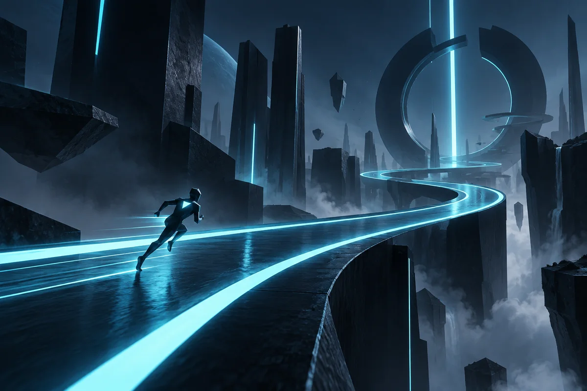

La vista previa de Signal Runner no está disponibleDiseño de videojuegos · Programación
Signal Runner
Un concepto de juego dinámico que combina movimiento, ritmo y señales visuales claras.
Ver proyectoResumen
Diseño, desarrollo y prototipos físicos reunidos en un solo lugar.

La vista previa de Signal Runner no está disponibleDiseño de videojuegos · Programación
Un concepto de juego dinámico que combina movimiento, ritmo y señales visuales claras.
Ver proyecto La vista previa de Modular Input Deck no está disponible
La vista previa de Modular Input Deck no está disponible
Diseño de hardware
Un panel de control personalizable para flujos de trabajo creativos y prototipos rápidos de hardware.
Ver proyecto La vista previa de Sistema de portafolio no está disponible
La vista previa de Sistema de portafolio no está disponible
Programación · Diseño web
Un portafolio generado de forma estática con datos de proyecto centralizados y vistas temáticas flexibles.
Ver proyecto